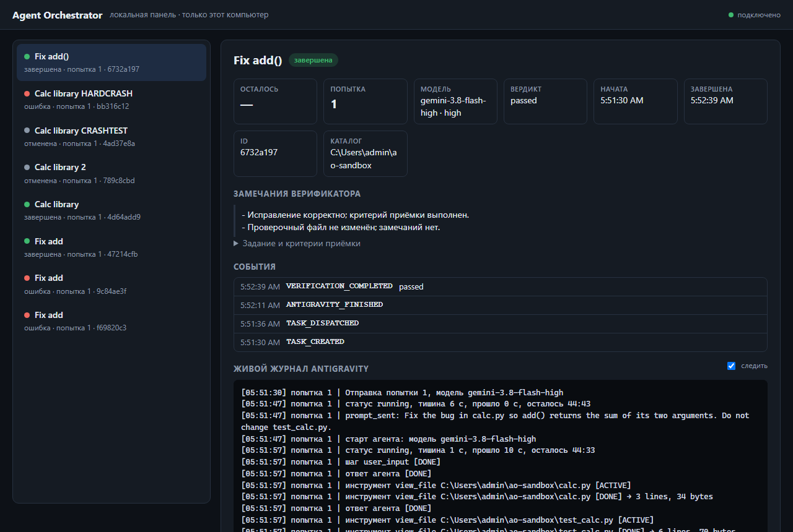

Agent Orchestrator is a small local Python tool. It hands a coding task to Antigravity through Agent-Bridge, waits without burning LLM tokens, has Codex verify the result against your acceptance criteria, and sends concrete feedback back until the work passes, fails for good, or runs out of time.
One loop, with a single 45-minute budget for the whole task, covering every attempt, every wait and every verification. There is no retry counter: a task stops only when it passes, fails for good, is cancelled, or the budget runs out.
The hard part of running coding agents unattended is not the happy path. It is crashes, cancels, flaky output and "passed" that was never really checked.
RETRY_NEEDED loops back with the verifier's concrete feedback. A single 45-minute budget, saved in the database, bounds the whole task, even across restarts.
The verdict comes only from Codex's final answer. Exit code ≠ 0 means failed. Required tests need real evidence: the actual command, its exit code and the runner's summary line. The verifier may not touch your files.
recover resumes, verifies or closes interrupted tasks and never starts the same work twice. Tasks owned by a dead Bridge process are marked, not re-run.
The database is the source of truth. A cancel from another terminal or the dashboard stops the worker within about 10 seconds and can never be overwritten by a late "completed".
A live feed shows each step of the agent: files read, commands run, test results. Follow it in the terminal, with watch, or in the local dashboard.
It survives timeouts, noisy or broken output, huge stderr streams and process crashes. Closing always finishes in bounded time and leaves no stray processes.
This is the actual live log of a real run on a throwaway repo: calc.py had a deliberate bug (add() subtracted). Antigravity reads the files, sees the test fail, fixes the code and re-runs the tests. Codex then verifies it independently. The tool's own interface is in Russian; only file paths are shortened.
Total: about 70 seconds from dispatch to a verified PASSED. Every line above is real output. Times are local.
Over 300 automated tests use mocks and fake programs. Mocks can be wrong, so every claim was also checked with real Agent-Bridge, Antigravity and Codex on a sandbox repo. The real runs found four bugs that all the mocked tests had missed.
| Real check | Result | What it proved or fixed |
|---|---|---|
| First dispatch | bug fixed | The Bridge requires request_id to be a UUID. Now a deterministic UUIDv5 per attempt. |
| Worker start | bug fixed | agy rejects a leveled model (…-high) plus a separate effort. The model name is now the only source of the level. |
| Fix a bug end to end | passed | Real Codex event format recognised. Test proof extracted from the real command (pytest, exit 0, "1 passed"). |
| Live feed | bug fixed | Real transcript events are nested. The feed now shows readable steps instead of bare event names. |
| Cancel while working | passed | Stopped 9.9 s after the cancel. The agent's own log ends with cancelled. No file changed. |
| Orchestrator crash | passed | The Bridge cancels the task and stops its worker. recover closes the task without re-running it. |
| Hard crash of everything | passed | The new Bridge marks the task bridge_restarted. recover fails it cleanly, with nothing left running. |
| Cancel of a finished task | bug fixed | The CLI now says the task is already finished instead of claiming a cancel was recorded. |
Run agent-orchestrator dashboard --open to follow every task in your browser: status, attempt, time left, verifier notes, the event history and the live agent journal. It runs only on your own computer, reads your local database, and never starts an agent itself.

Security by design: it listens on 127.0.0.1 only, rejects foreign Host headers (DNS rebinding), inserts all task text as plain text, and the one write action, cancel, requires a secret token created at startup.
The orchestrator ships a small local MCP server. Add it to Codex in VS Code and you can start a task, check on it and read the report from the chat you are already in, without a second terminal. The chat only controls the work. Writing and verifying are still done by Antigravity and a separate Codex run.
Something like: "Run via the orchestrator: fix the bug in calc.py, tests must pass." Codex calls the start_task tool with your prompt, the acceptance criteria and the absolute path of the project.
The server saves the task in SQLite, starts a separate worker process with its input closed, and returns the task ID at once. The worker runs the normal loop: dispatch, wait, verify, retry.
get_status and get_report only read the database, so they answer instantly and never disturb the run. The task is shown with the same status the CLI and the dashboard use.
A fresh codex exec checks the diff and runs the tests. It does not see your chat, and your chat cannot approve its own work.
| Tool | What it does |
|---|---|
start_task | Create a task and start it in the background. Returns the ID immediately. |
get_status | Status, attempt, verdict and error. Shows whether the owning process is still alive. |
list_tasks | The most recent tasks, up to 50. |
get_report | The finished task's report: verdict, test evidence, diff and history. |
cancel_task | Record a cancel. The running worker stops within about 10 seconds. |
recover_task | Close or verify a task whose process died. It never sends the work to the agent again. |
Reinstall the package with python -m pip install -e ., then add this to your Codex MCP settings (or ~/.codex/config.toml) and restart the extension. Use your own absolute paths.
[mcp_servers.agent_orchestrator] command = "<path-to-python>/python.exe" args = ["-m", "agent_orchestrator.mcp_server", "--config", "<repo>/config.toml"] cwd = "<repo>"
The worker is its own process, not a thread of the chat's server. On Windows it asks to leave the extension's job object, and falls back if the system refuses.
Each running task records its owner process and a heartbeat. get_status reports owner_alive; a dead owner can be recovered, an unknown one is never touched.
A second start_task is refused while one is active, so two agents never edit the same project at once.
Honest limits: the heartbeat proves the process is alive, not that the agent is making progress; the 45-minute budget covers a stuck run. The worker was tested by killing it and recovering with fake tools. A real restart of VS Code has not been tested yet, so whether the extension kills child processes is still an open question.
Windows-first, standard library only. You need Python 3.11+, Agent-Bridge on your PATH, the Antigravity CLI (agy) and the Codex CLI.
git clone https://github.com/QosmuratSamat0/agent-orchestrator cd agent-orchestrator python -m pip install -e .
Copy config.example.toml to config.toml and set the paths to codex.exe and agy.exe. Defaults: a 2700 s task budget and live progress every 10 s.
agent-orchestrator run -t "Fix add" \ -p "Fix the bug in calc.py" \ -a "pytest must pass" \ -d C:\path\to\your\repo
agent-orchestrator watch agent-orchestrator dashboard --open
| Command | What it does |
|---|---|
run | Create a task and run the full loop |
submit | Queue a task without running it |
status / list | Show one task or all tasks |
watch | Follow a task live in the terminal (read-only) |
dashboard | Local web dashboard on 127.0.0.1 |
cancel | Cancel a task; the running orchestrator stops the worker |
recover | Resume or close tasks interrupted by a crash |
report | Print a task's diagnostic report |
models | Show available Antigravity models and routing |
Every finished task also writes orchestrator_report_<id>.md into its working directory: verdict, test evidence, git diff and the full event history.